Puente Alto · Luis Matte Larraín 862
Cada especie, su ficha.
Exóticos y de siempre, con 380 reseñas.
- 380reseñas en Google
- 2.579seguidores en Instagram
- 7días a la semana abierta
- 0páginas propias: «veterinario de conejos» no los encuentra
Cada especie, su ficha
¿Atienden a mi animal?
- CONEJO
Heno siempre
Si deja de comer medio día, consulta ese día.
- REPTILES
Calor con gradiente
Un lado tibio y otro fresco en el terrario.
- COBAYO
Vitamina C en la dieta
Pelo erizado y quieto: pide hora.
- AVES
Sin corrientes de aire
Plumas infladas en el fondo: pronto.
- HURÓN
Control una vez al año
Decaído o sin apetito: consulta.
Conejos y reptiles, según sus reseñas; el resto por confirmar. Consejos generales.
En los exóticos, la señal es sutil.
En Luis Matte Larraín 862
Lo que hay en Exohouse
-
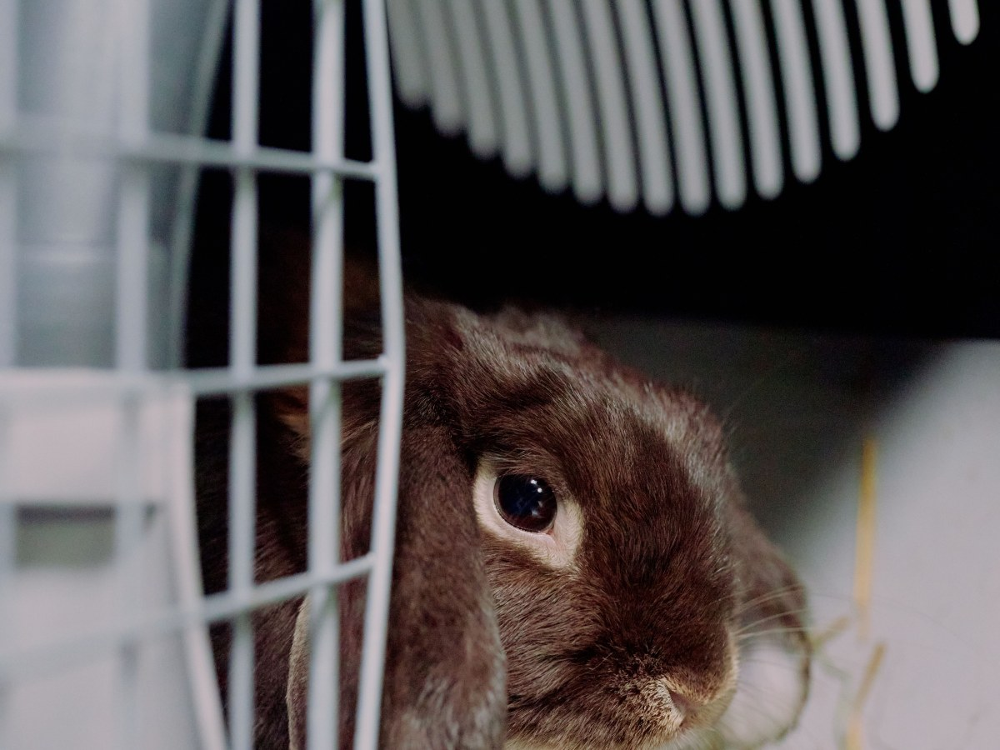
Su especialidad
Consulta de exóticos
Conejos, reptiles, serpientes.
-
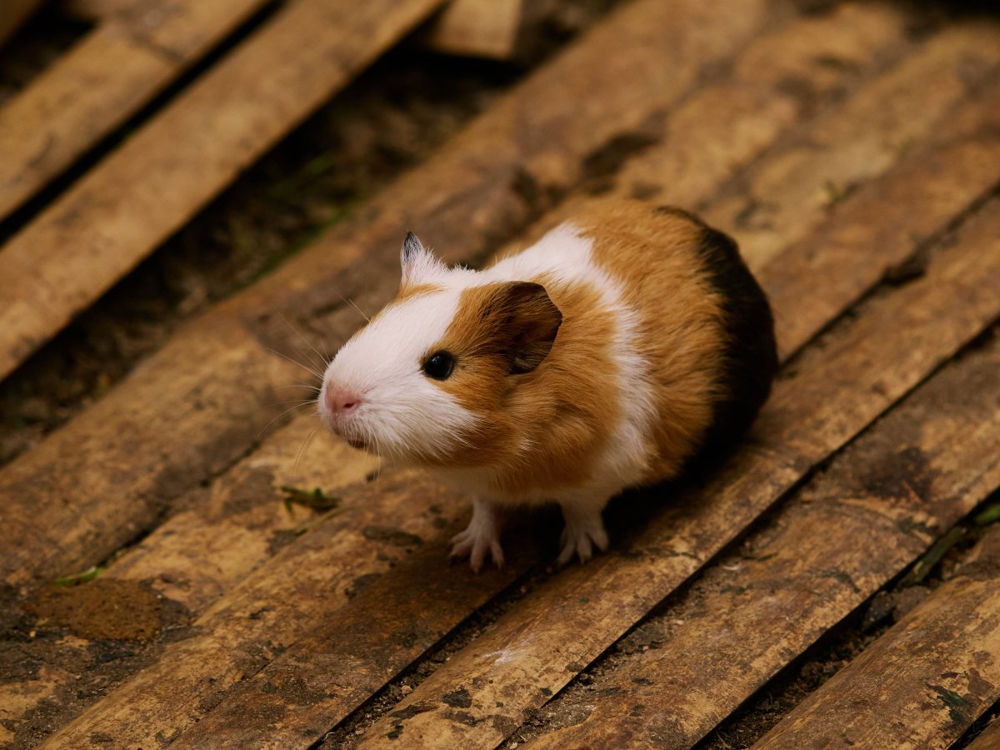
30 min
Consulta y vacuna
Perros y gatos también.
-
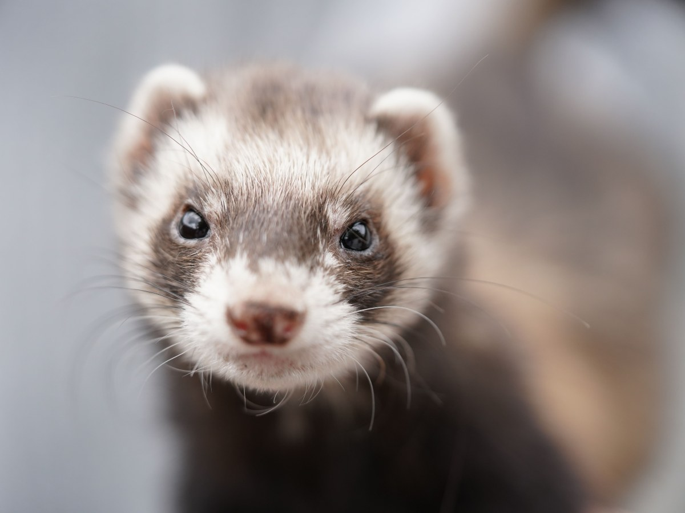
15 min
Corte de uñas
Con cuidado y sin apuro.
-
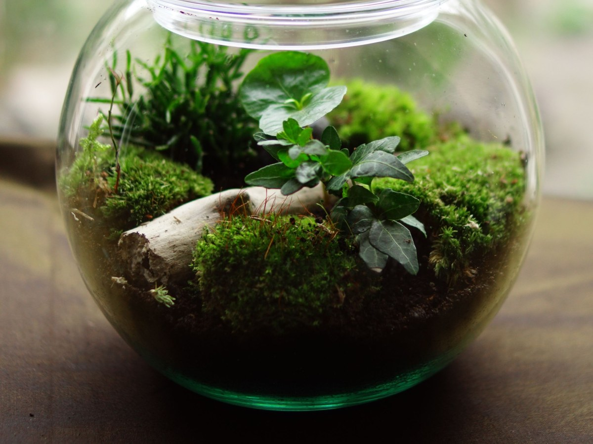
Para su casa
Sustrato y comida
Accesorios para exóticos.
-
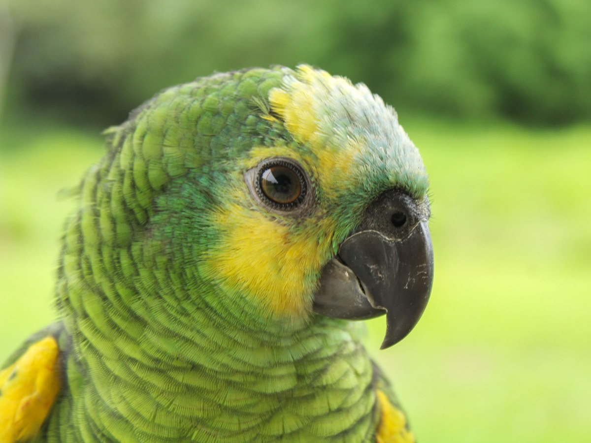
Quirófano
Cirugía
Según el caso, por confirmar.
-
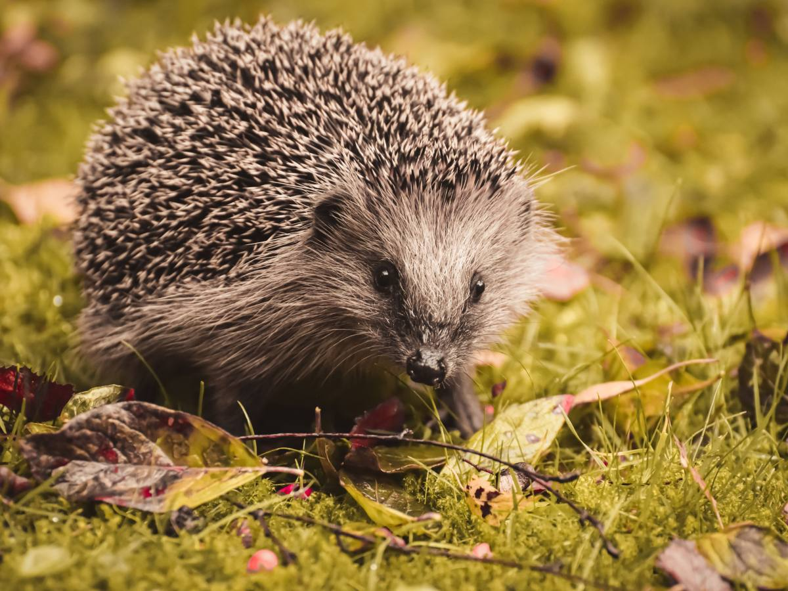
Diagnóstico
Exámenes
Ecografía y laboratorio, por confirmar.
Consulta, vacunas y uñas: de su AgendaPro. Accesorios: de sus reseñas.
380 reseñas, de conejos a serpientes.
Luis Matte Larraín 862, Puente Alto
Escamas, plumas y orejas
Los pacientes de siempre
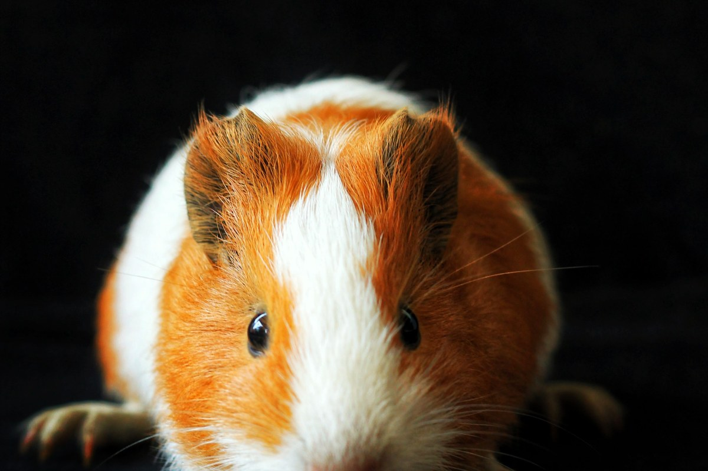
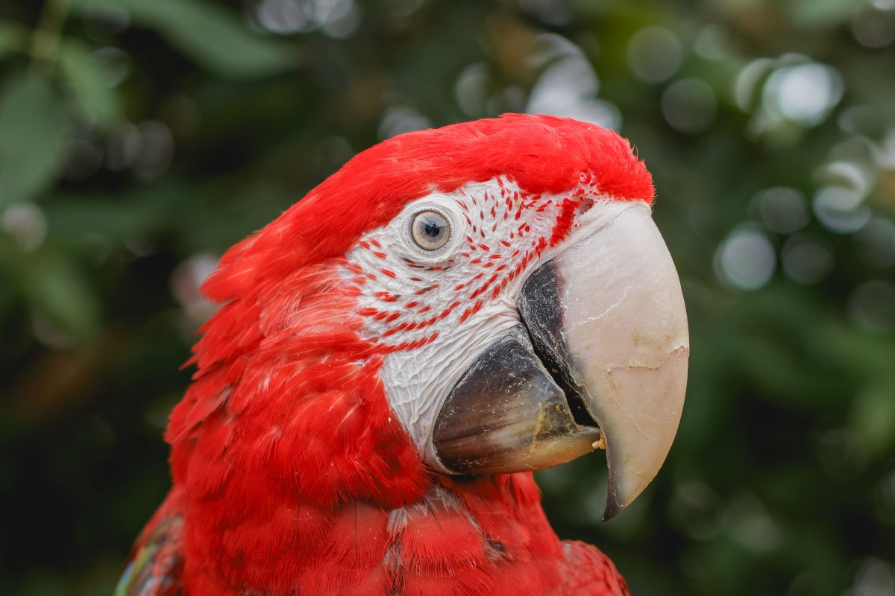
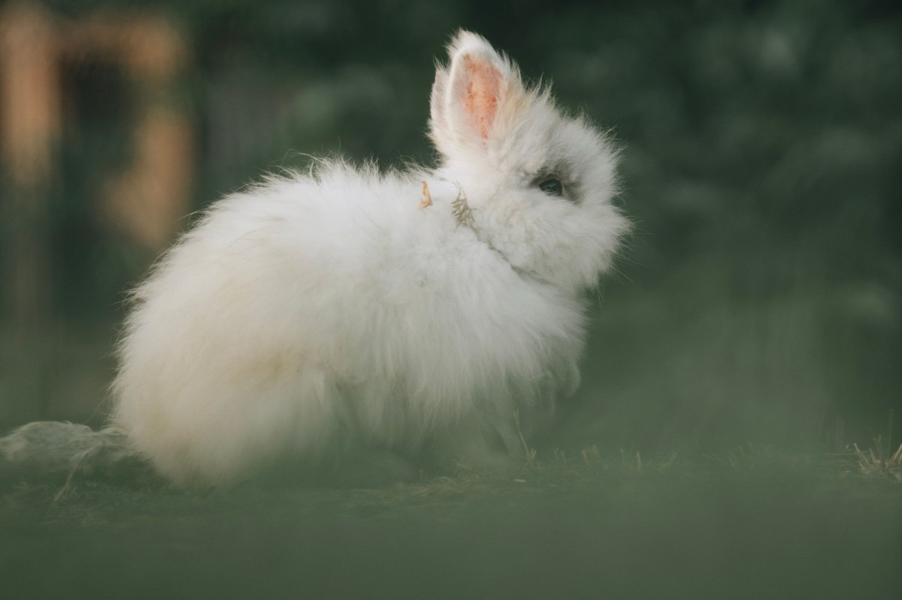
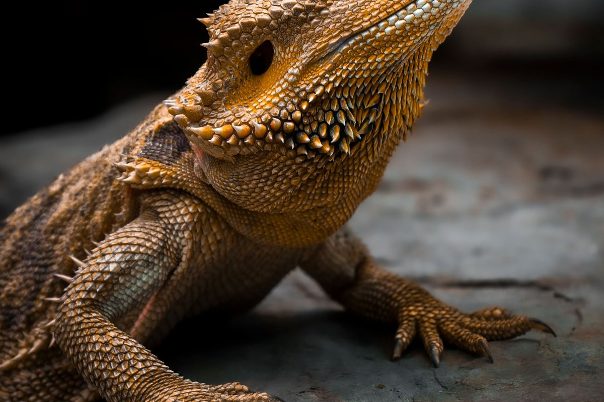
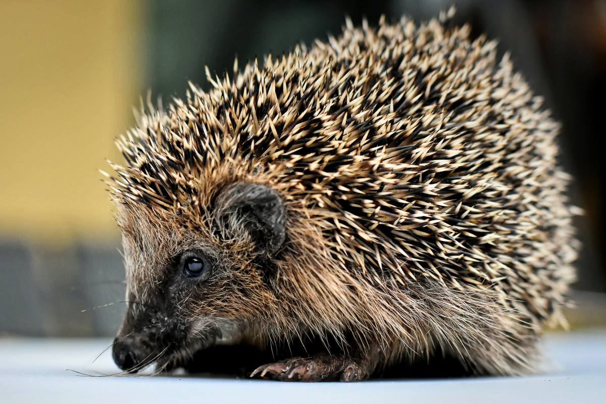
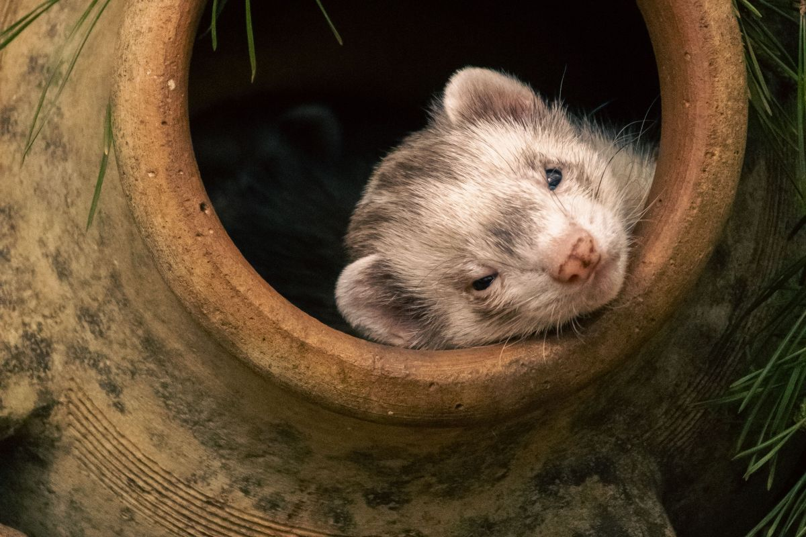
Fotos de referencia: ninguna es de la clínica.
Dónde estamos
Luis Matte Larraín 862, Puente Alto
- Dirección
- Luis Matte Larraín 862
- Teléfono
- (2) 2920 4916
- Horario
- Lun a sáb 10–14 y 15–20 · dom 10–14 y 15–19
- @clinica_veterinaria_exohouse
Abre también el domingo. Trae a tu animal en su transportadora.
Luis Matte Larraín 862, Puente Alto Abrir en Google Maps
Para el dueño
Qué es real y qué falta
Lo verificado
Dirección, teléfono, horario, servicios de su AgendaPro, las reseñas y su Instagram.
Lo de ejemplo
Las fichas por especie y las fotos.
Lo que falta
Qué especies atienden, el equipo y fotos de la clínica.